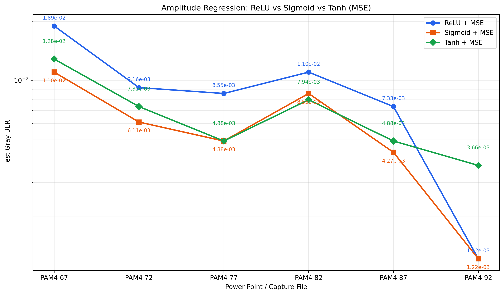

数据处理
理解输入
读取接收波形与发送标签，检查重复 capture，完成归一化和窗口构建。
光通信中的噪声和码间串扰会使接收幅度偏离理想的 −3、−1、+1、+3 电平。均衡器利用相邻采样点的信息恢复符号，最终与发送标签比较，评估恢复质量。
读取接收波形与发送标签，检查重复 capture，完成归一化和窗口构建。
实现全连接、卷积和循环网络，探索分类与连续幅度回归方案。
使用验证结果选择模型，将预测概率或连续幅度转换为 PAM4 符号。
记录 BER、SER 和混淆矩阵，结合损失曲线与幅度分布分析误判。
切换模型查看实测结果。BER 是错误比特所占比例，越低越好；符号准确率衡量 PAM4 电平判决是否正确。
在单隐藏层幅度回归 DNN 中，固定数据划分与训练配置，对比 ReLU、Sigmoid、Tanh。三组均使用 MSE 损失与固定阈值判决，评估激活函数对最终 BER 的影响。

模型开发不仅是调整层数。数据是否独立、训练效果能否延伸到验证集，同样影响实验结论。
示例来源：去重实验 pam4_67 的 capture_check 记录。当前展示的 DNN 回归实验仍使用两条 capture。
这项研究覆盖从接收数据处理、网络开发到信号判决与可视化评估的完整过程。通过对照实验和数据检查，理解模型表现，也识别结果的适用范围。
下载结果摘要个人联系方式请以随附简历为准。